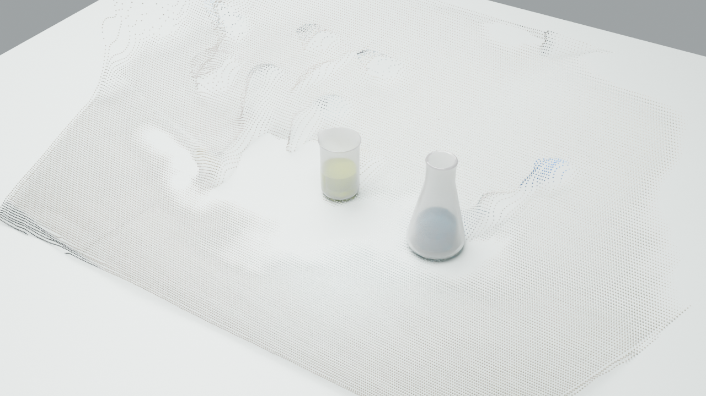

EGO2SIM / GEOMETRY & CONTACT / V3从像素到坐标，再检查接触。
这次补上实际点云与几何注册。每一步保留估计、拟合误差和未完成的验证。
返回阶段演示 · 完整生成报告 · 本轮检查 JSON
现在的 pipeline 到了哪一步
| 环节 | 实际完成 | 仍有限制 |
|---|
| 深度与点云 | 88 份 DA3 深度 + 内参反投影，输出 RGB 点云与 PLY。 | 单目相对深度；透明器皿深度不作为真实表面。 |
| 桌面与世界系 | 排除前景后 RANSAC 平面；Z 沿桌面法向；263 帧 ORB/PnP 估计相机。 | 不是标定相机或 SLAM。独立 LK 抽查仅 4/9 帧有足够支持，5 帧未验证。 |
| Mesh 尺度／位姿 | 保持原 CAD 尺寸，联合优化深度尺度和两个器皿首帧 XY，导出 Blender。 | 模型来自原任务 CAD，不冒充视频生成 Mesh；瓶体仍有误差。滴管动态 6D 位姿未注册。 |
| 手部与接触 | 时序滤波、根部重投影优化、可见遮罩距离与候选持续性。 | 2D 邻近不是 3D 接触；无 Xsens 实测骨架，无接触力。 |
| 机器人 | 保留 RealMan RM65-B、Xense、原相机和液体颜色；既有 IK 候选。 | 视频／机器人外参未标定；尚未用新几何重新生成机器人轨迹。 |
01 / 深度 → 反投影点云 → 桌面世界
反投影再投影最大误差 1.61e-05 px；旋转行列式约 1。首帧桌面候选点中 90.5% 为拟合内点，CAD 先验尺度下平面内点 RMS 4.29 mm。整段桌面候选像素的平面 RMS 中位数由 146.17 mm 降至 26.17 mm（包含残留杂物）。这些是算法一致性与拟合残差，不是实际测量精度。
世界坐标点云 PLY · 相机坐标相对点云 · 逐帧相机矩阵
02 / 固定 CAD 尺度，检查 Mesh 投影
首帧拟合遮罩 IoU（240×135）：烧杯 0.618 → 0.787；锥形瓶 0.484 → 0.638。输入遮罩本身也有玻璃边界误差，此分数不是独立真值准确率。轴对称物体的绕轴旋转未观测。

Blender 检查视角。带点云、估计桌面、源相机和已注册 CAD；未注册滴管保存在隐藏的明确命名集合中。
03 / 手部重投影与接触候选
保留模型手部骨骼形状，优化根部位置；手实例投影误差中位数 32.42 → 7.59 px。226/239 个手实例通过 ≤12 px 的几何候选质量门，30 个缺失帧未补造。此结果只说明二维投影拟合改善，不保证三维手形真实。
拇指和食指均距可见物体遮罩小于 12 px 才进入候选，连续观测后标记持续候选；退出阈值 18 px，缺失即清除。遮挡接触不当作已观测，force 字段保持 null。
原始／滤波关键点、三维估计与候选记录
参考方法如何落实
SimFoundry 将深度、平面、统一世界系、Mesh 和位姿注册拆成阶段。这里采用相同的分阶段检查思路，新增独立实现的几何模块；没有安装或运行它的完整重建与仿真系统。
EgoCPT 以物体运动为目标，将人手作为接触搜索的参考，并结合位姿细化和力分配。这里先补观测质量与接触候选层；尚未实现其完整优化器。面向 Xense 平行夹爪，下一步应选择双指表面接触、检查穿透／滑移／可达性，再接入力与物理反馈，不能照搬 Sharpa 灵巧手配置。
未运行：动力学、力分配、碰撞完整验证、胶头变形、液体仿真、任务成功验收。当前展示包含真实处理产物和明确标记的候选，不是已完成的物理求解。